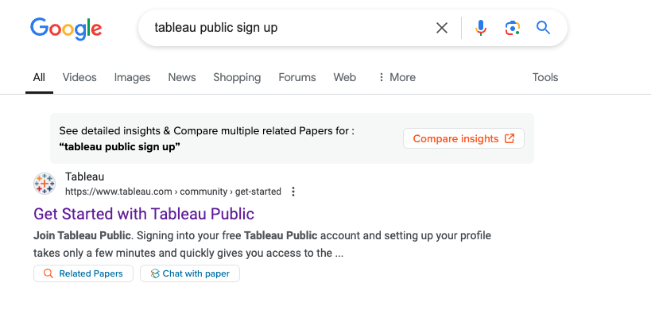
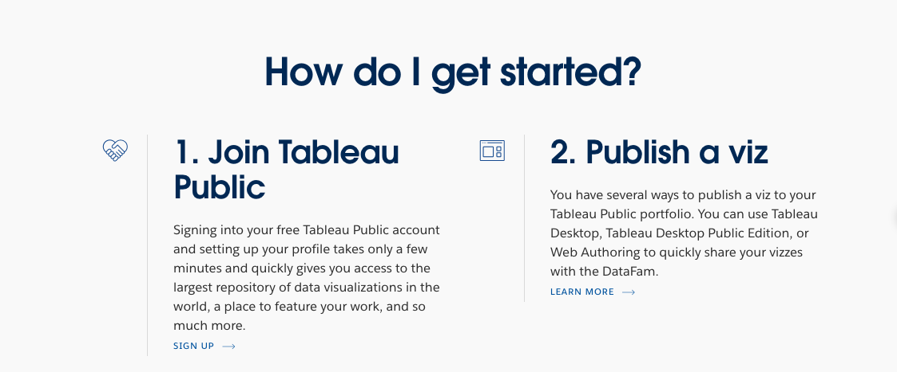
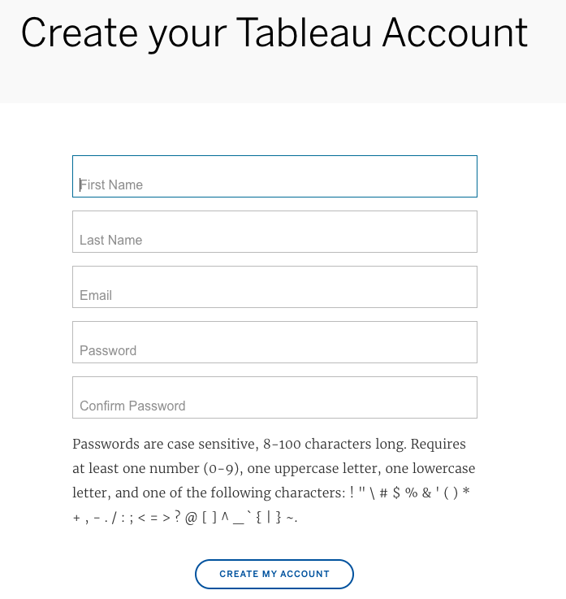

How to Create an Account on Tableau Public
Follow the steps below to sign up for Tableau Public, a free platform for data analysis and visualization.
Step 1: Search for Tableau Public on Google
Open Google in your browser and type 'Tableau Public sign up' into the search bar. Press Enter.

Step 2: Click the First Link
Click on the first search result that says 'Get Started with Tableau Public'. This will take you to the Tableau Public website.
Step 3: Sign Up on Tableau Public
On the Tableau Public website, scroll down the page to find 1. Join Tableau Public and click the 'Sign Up' button.
Fill in your details such as email, password, and any required information. Then, click 'Create My Account'.

Step 4: Verify Your Email

Check your email inbox for a verification email from Tableau Public. Click the link in the email to verify your account.
Additional Information
If you encounter any issues, visit the Tableau Help Center for more support.